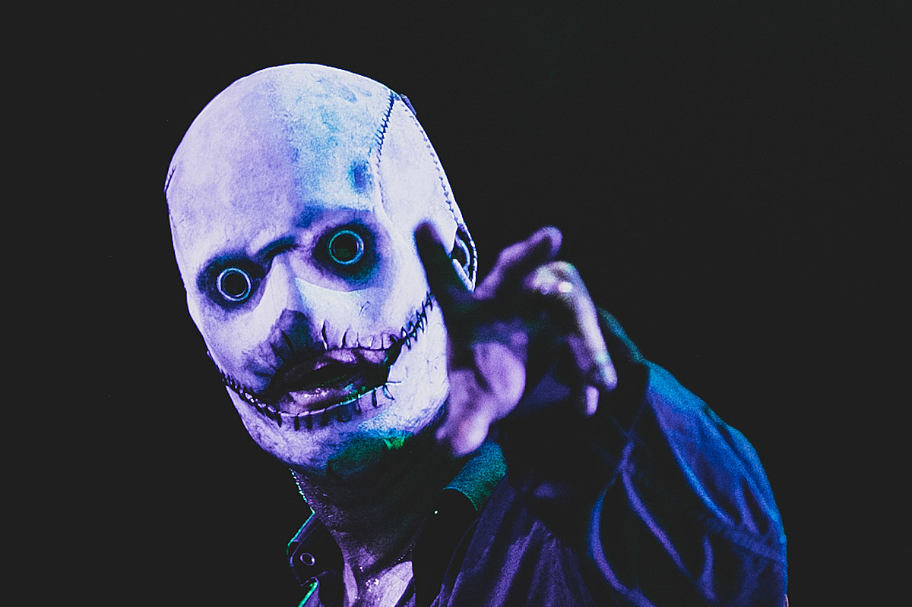
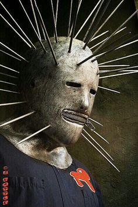
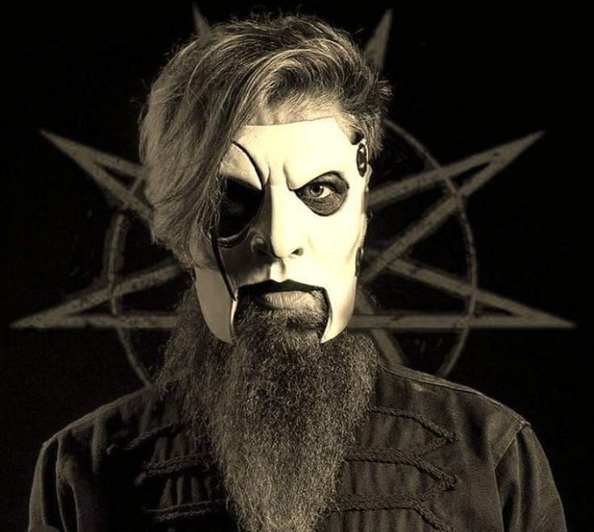
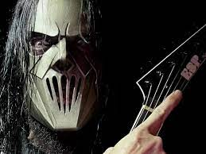
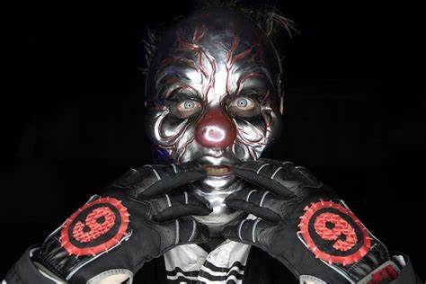

Slipknot es una banda estadounidense de metal alternativo formada en 1995 en Des Moines, Iowa, Estados Unidos. Sus integrantes en la actualidad son Corey Taylor, Craig Jones, Jim Root, Mick Thomson, Shawn Crahan y Sid Wilson. Slipknot es conocida por las máscaras características de cada uno de sus miembros, que cambian conforme han sacado más discografía.
Sus miembros utilizan dos tipos de guitarra (principal y rítmica), un bajo, dos instrumentos de percusión personalizados, una batería e instrumentos electrónicos como sampler o mesas de mezclas. El sonido de la banda ha sido descrito como "una máquina trilladora devorando un grupo de tambores militares". El vocalista Corey Taylor también incorpora diversos estilos vocales, como por ejemplo la voz gutural, el canto melódico y el rapeo, mientras que las letras en general tienen un tono agresivo. Las influencias de la banda incluyen, entre otros géneros, el death metal, el thrash metal y el heavy metal, aunque suelen ser incluidos con asiduidad dentro del metal alternativo y el nu metal.
Redes sociales Discografia Página Oficial| Nombre | Número | Máscara |
|---|---|---|
| Corey Taylor | 8 |  |
| Craig Jones | 5 |  |
| Jim Root | 4 |  |
| Mick Thomson | 7 |  |
| Shawn Crahan | 6 |  |
| Sid Wilson | 0 |